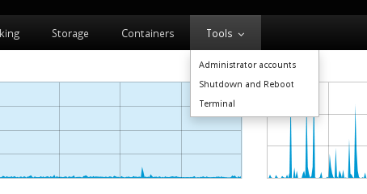
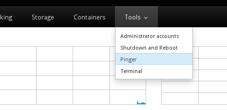

Note: This post has been updated for changes in Cockpit 0.90 and later.
Cockpit is a user interface for servers. And you can add stuff to that user interface. Cockpit is internally built of various components. Each component is HTML, with Javascript logic that makes it work, and CSS to make it pretty.
It’s real easy to create these components. Tools are components that show up in the Tools menu in Cockpit:

For example the Terminal that you see there is implemented as a tool. But lets make ourselves another one. For this tutorial you’ll need Cockpit 0.41. You can install it in Fedora 21 or build it from git.
So break out your terminal, lets make a package called pinger that checks whether your server has network connectivity to the Internet by pinging another host. Nothing too fancy. We’ll just be spawning a process on the server to do the work. I’ve prepared it for you as an example here, and we can look it over, and modify it. To download the example to your current directory:
$ wget http://cockpit-project.org/files/pinger.tgz -O - | tar -xzf -
$ cd pinger/
Components, and more specifically their HTML and Javascript files, live in package directories. In the package directory there’s also a manifest.json file which tells Cockpit about the package. The pinger directory above is such a package. It’s manifest.json file looks like this:
{
"version": 0,
"tools": {
"pinger": {
"label": "Pinger",
"path": "ping.html"
}
},
"content-security-policy": "default-src 'self' 'unsafe-inline' 'unsafe-eval'"
}
The manifest above has a "tools" subsection. Each tool is listed in the Tools menu by Cockpit. The "path" is the name of the HTML file that implements the tool, and the "label" is the text to show in the Tools menu.
You’ll notice that we haven’t told Cockpit about the package yet. To do so you either place or symlink the package into one of two places:
~/.local/share/cockpit
In your home directory, for user specific packages, and ones that you’re working on. You can edit these on the fly and just refresh your browser to see changes./usr/share/cockpit
For installed packages available to all users. These should not be changed while Cockpit is running.
Since we’re going to be messing around with this package, lets symlink it into the former location.
$ mkdir -p ~/.local/share/cockpit
$ ln -snf $PWD ~/.local/share/cockpit/pinger
You can list which Cockpit packages are installed using the following command, and you should see pinger listed among them:
$ cockpit-bridge --packages
...
pinger: /home/.../.local/share/cockpit/pinger
...
If you’re logged into Cockpit on this machine, first log out. And log in again. Make sure to log into Cockpit with your current user name, since you installed the package in your home directory. You should now see a new item in the Tools menu:

The pinger tool itself looks like this:

Lets take a look at the pinger HTML, and see how it works.
<head>
<title>Pinger</title>
<meta charset="utf-8">
<link href="../base1/cockpit.css" type="text/css" rel="stylesheet">
<script src="../base1/jquery.js"></script>
<script src="../base1/cockpit.js"></script>
</head>
<body>
<div class="container-fluid" style='max-width: 400px'>
<table class="cockpit-form-table">
<tr>
<td>Address</td>
<td><input class="form-control" id="address" value="8.8.8.8"></td>
</tr>
<tr>
<td><button class="btn btn-primary" id="ping">Ping</button></td>
<td><span id="result"></span></td>
</tr>
</table>
<p><pre id="output"></pre></p>
</div>
<script>
var address = $("#address");
var output = $("#output");
var result = $("#result");
$("#ping").on("click", ping_run);
function ping_run() {
var proc = cockpit.spawn(["ping", "-c", "4", address.val()]);
proc.done(ping_success);
proc.stream(ping_output);
proc.fail(ping_fail);
result.empty();
output.empty();
}
function ping_success() {
result.css("color", "green");
result.text("success");
}
function ping_fail() {
status.css("color", "red");
status.text("fail");
}
function ping_output(data) {
output.append(document.createTextNode(data));
}
</script>
</body>